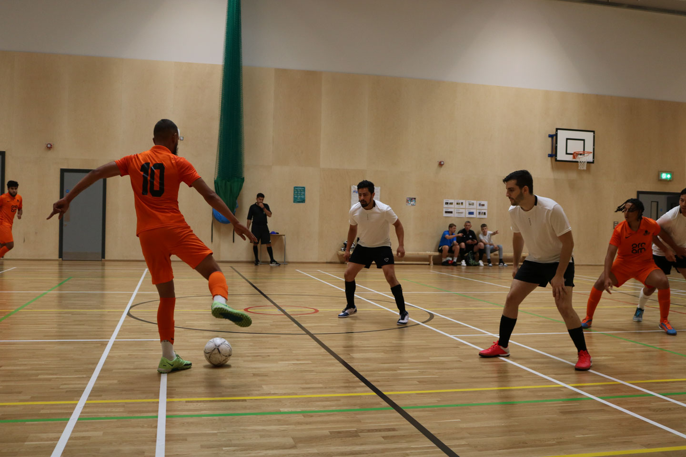
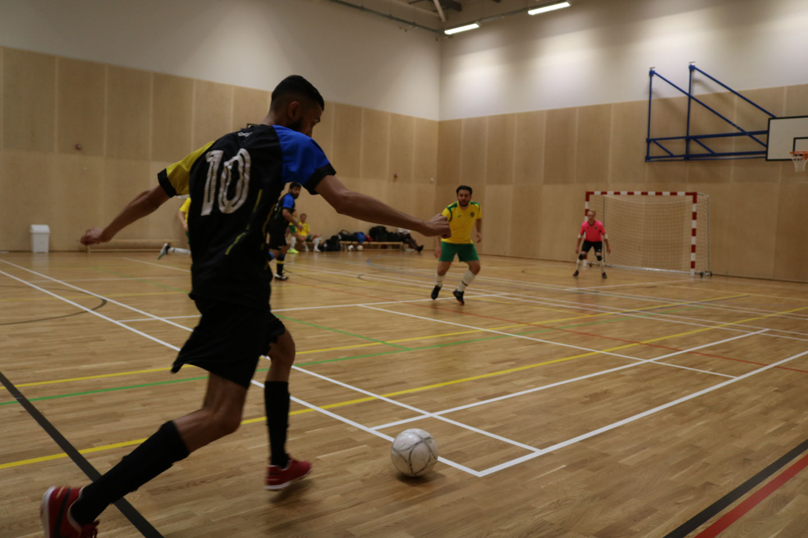
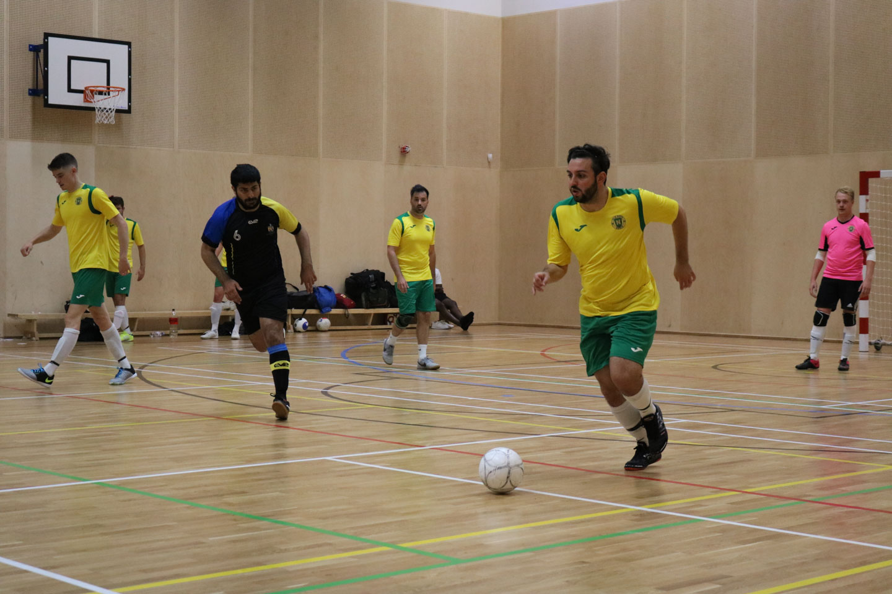
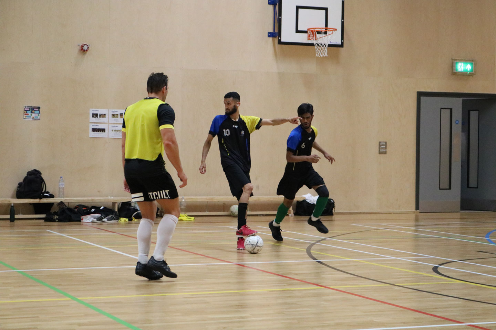
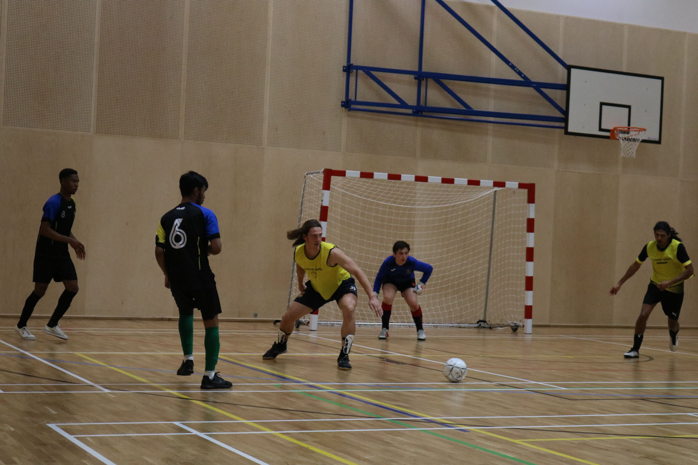

A quick guide before you fall in love watching futsal
Futsal is the FIFA-recognised form of small-sided indoor football (the word is a contraction of the Spanish 'fútbol sala'). a variant of football played (mainly) indoors on a hard court slightly larger than a basketball court, It is played between two teams who each have five players on the pitch at any one time, with rolling substitutes and a smaller ball than football that is harder and less bouncy.
Futsal is played with touchlines as boundaries and without walls or boards, at a faster pace than football, allowing for more touches and generally resulting in higher scores. It is played in over 100 countries worldwide by 12 million players.
In countries like Brazil, Argentina, Portugal and Spain, it is normal for young players to grow up playing futsal, and even those that switch to football credit their skills to the small-sided game – stars such as Cristiano Ronaldo, Lionel Messi, Neymar and Philippe Coutinho.
The fluid nature of futsal means outfield players usually cover the whole pitch but will generally have primary roles. Not all formations utilise all of the positions. Some players are known as 'Universal' and can fill any of the roles.
Many countries that we admire for the technical skills of their players use Futsal as an aspect of their youth development. Ball retention, quick and skilful play, and tactical awareness are all major assets that the game of Futsal helps to promote.
Reasons Why You Should Play Futsal:

Adaptability
– Futsal can be played on any hard surface, indoors and outdoors. You don’t need a grass field and no more rained out sessions. All you need is a ball and shoes. It is also the perfect complement to soccer. Almost any soccer tactical session can be adapted to futsal. It is ideal for training concepts on the “micro” level.

Improves Athletic Intelligence
– Futsal’s fast-paced and continuous nature helps to improve a player’s spatial intelligence and ability to read the game. A player’s head is always on a swivel, taking in information, anticipating the opponent’s next move, and looking to exploit weaknesses. Futsal helps players learn to play under pressure and in tight spaces.

Speed of Play
– The small space requires players to play quicker and make faster decisions. In futsal, you only have a split second to decide what to do with the ball before you are pressured. This encourages players to move on and off the ball, create space and support teammates to combine out of pressure. (Sounds like tiki-taka!)

Ball Skills and Control
– According to Dr. Emilio Miranda from Sao Paolo University, a futsal player will have 600% more touches than a soccer player. This helps players master their touch and gives them confidence to hold on to the ball and take players on 1v1. Futsal also improves a player’s first touch and ball control under pressure.

Creativity
– Perhaps the most important reason to play futsal is that it encourages players to be creative and think out of the box. Because the court is smaller and you get more touches, players try things that they would not risk on the soccer field. This creativity can come in the form of crazy 1v1 moves, unbelievable passes, and combinations or the mastery of the toe-poke.